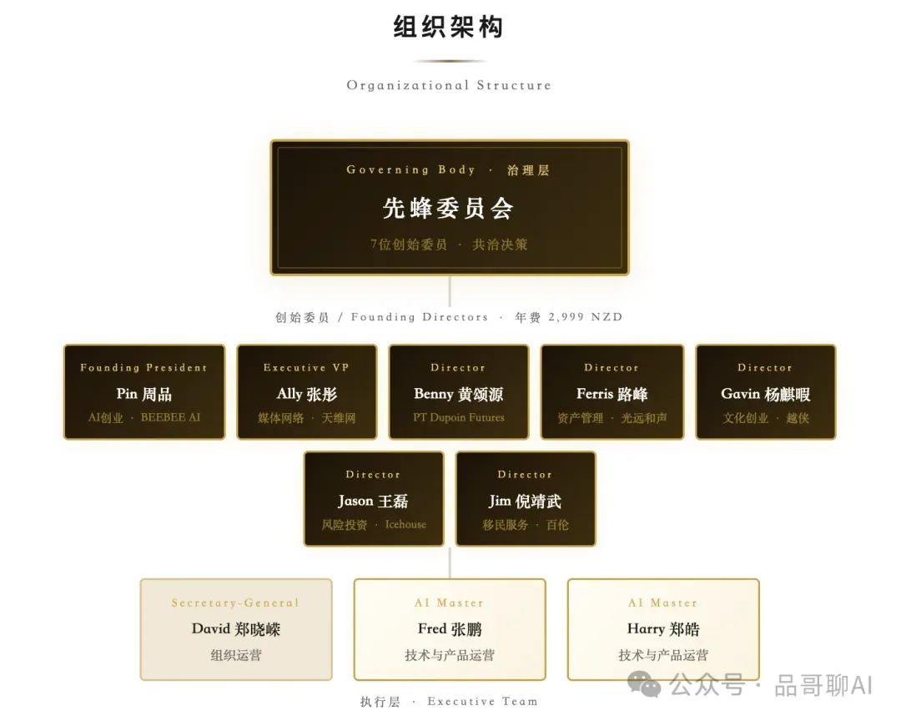
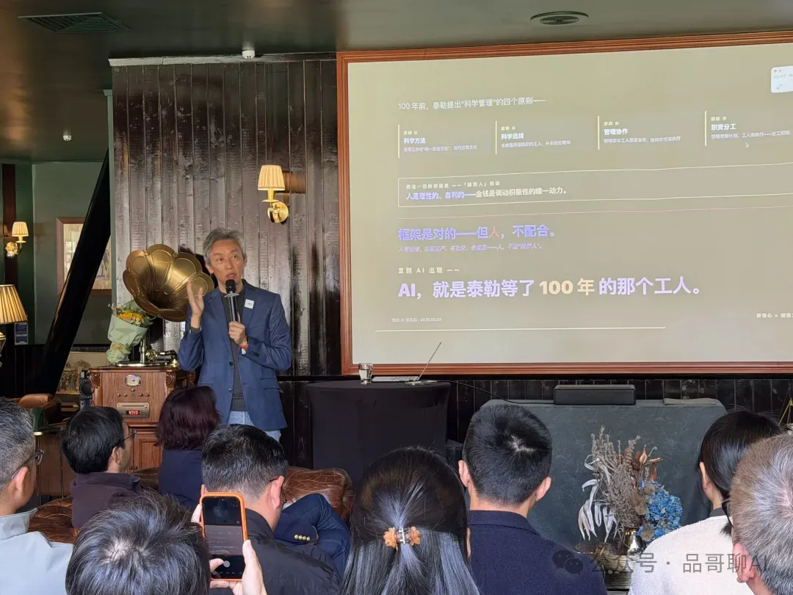
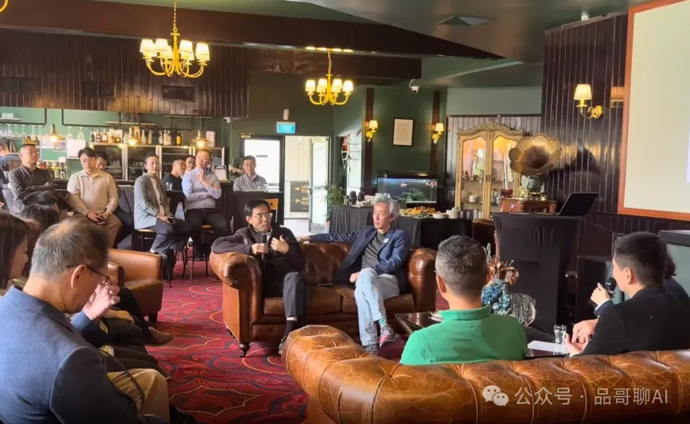
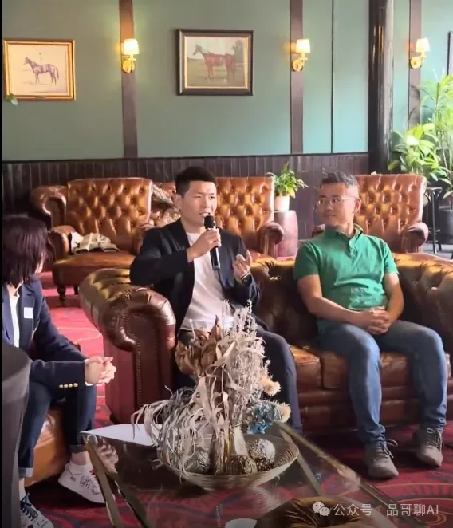
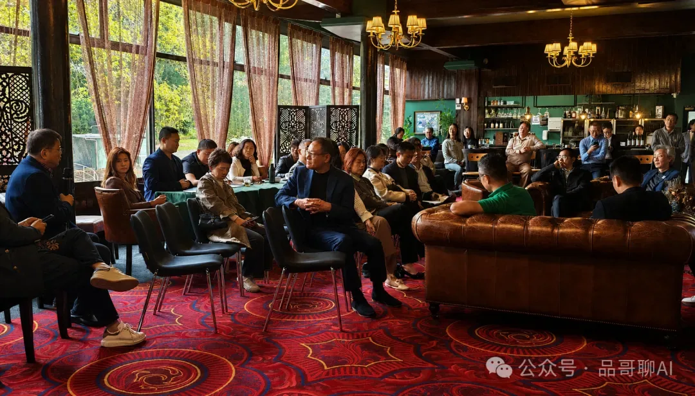

NewBee（先蜂）AI俱乐部于新西兰正式成立
2026 年 5 月 4 日，在新西兰奥克兰，先蜂 AI 俱乐部首次创会活动成功举行。本次活动以“AI 时代重构老板”为主题，汇聚企业家、投资人、教育与法律从业者、地产、电商、科技及家庭教育等多个领域的嘉宾，共同探讨 AI 时代下个人、企业与社会组织的变化与机会。

作为俱乐部正式成立后的首次创会活动，本次会议不仅是一场 AI 主题分享，更是一次面向华人企业家与专业人士的共同学习、共同验证与共同实践的开始。
会议从签到开始就很 AI Native（原生）：由俱乐部 Harry（AI Master）打造的星链签到程序让入场嘉宾眼前一亮；由会长 Pin 和 AI 共同作词，Fred（AI Master）与 Suno 作曲，结合 SeeDance 生成的会歌 MV——《AI 时代为我而创》，中英文说唱让人一曲入魂。会议开始前的 NewBee AI 俱乐部介绍视频，则把会议带入高潮。
一、办会宗旨：建立长期可信的 AI 共同体
活动伊始，先蜂 AI 俱乐部秘书长 David Zheng（郑晓嵘）介绍了本次会议的背景与流程。他提到，5 月 4 日这一日期本身具有特殊意义：百余年前，“科学”与“青年”曾代表一个时代的觉醒；而今天，AI 正在成为新的时代变量。今天启动，让大家先飞一步！
随后，先蜂 AI 俱乐部常务副会长 Ally Zhang（张彤）代表组委会介绍俱乐部创会宗旨。她表示，AI 带来的真正差距，不只是技术差距，而是判断力与行动力的差距。
俱乐部希望建立一个长期可信、可持续的共同体，让成员能够：
共同提升判断力；
将 AI 真正应用到企业、家庭和行业中；
一起做项目、复盘、迭代；
在 AI 时代守住人的创造力、判断力与良知。
Ally 强调，先蜂 AI 俱乐部不是培训机构，也不是单纯的工具学习组织，而是一群愿意认真学习、认真提问、认真行动的人，在 AI 时代共同前行的家园。
她还代表创会同仁宣读了俱乐部白皮书的核心精神：好奇心不被算法投喂，自己提出下一个问题；创造力不只停留在消费 AI，更要成为 AI 时代的创造者；致良知是在深度伪造和自动化替代的时代，守住人的判断力与人之所以为人的部分。

二、参会嘉宾：跨行业创会成员与实践者共同参与
本次活动邀请了多位创会委员、创始会员及行业嘉宾参与。现场及线上嘉宾包括先蜂 AI 俱乐部会长 Pin（周品）、常务副会长 Ally（张彤）、秘书长 David（郑晓嵘），以及来自投资、地产、移民留学、法律、电商、科技创业、家庭教育等领域的企业家和专业人士。
活动中，周品介绍了多位创会委员及支持者，包括百伦移民创始人 Jim（倪靖武）、Icehouse 合伙人 Jason（王磊）、光远和声管理人 Ferris（路峰）、越侠文化创始人 Gavin（杨麒暇）、PT Dupoin Futures CEO Benny（黄颂源），以及多位在新西兰本地深耕多年的企业家与行业代表。
此外，Pat（霍光）、Raymond（霍建强）、Leo（李权）、Knight（后方）等嘉宾也围绕各自领域中的 AI 应用、数据安全、知识库建设、内容生产、企业管理与孩子教育等议题进行了分享与互动。

三、会议主题：AI 时代重构老板
本次活动的主题演讲由先蜂 AI 俱乐部创会会长周品带来，题为《AI 时代重构老板》。周品首先回顾了自己过去三年在 AI 领域 12000 个小时的学习、产品实践、培训与企业陪跑经历。他表示，AI 不是一个遥远的未来，而是已经进入现实生活和工作现场的生产力工具。
他用多组数据说明 AI 时代的巨大变化：全球头部科技公司市值快速增长；大模型调用成本大幅下降；GPT 类产品用户规模迅速扩大；世界 500 强企业大多数已经使用 AI；但真正能在利润表上体现 AI 价值的企业仍然有限。相反，深度欺诈的 AI 应用已经骗到了真金白银。
周品认为，AI 既然是一次深层生产力革命，它改变的就不只是员工的工作方式，首先重构的是老板和决策者的角色。在他看来，未来的老板不一定只是传统意义上的企业主。高管、白领、创业者，甚至能够用 AI 为自己的行动和结果负责的年轻人，都可以成为某种意义上的“老板”。
周品最后指出，一百多年前泰勒讲到的“经济人”可能会在 AI 身上实现，企业组织正在从传统流水线式管理，转向端到端的快速响应模式。AI 的价值不只是替代执行，而是帮老板把判断、知识和方法下沉到一线，让前端具备更强的决策能力。任正非所说的“让听得见炮火的人做决策”，可能要变成，让“老板分身”和员工一起到前线去听炮火。

四、圆桌分享：AI 在投资、家庭、工作与学习中的真实应用
主题演讲后，活动进入圆桌分享环节。多位嘉宾结合自身行业与实践，分享了 AI 在真实场景中的落地方式。
Jason 从投资视角分享了 AI 在风投工作流中的应用。AI 可以帮助投资机构整合 Notion、Outlook、HubSpot 等系统，辅助项目筛选、投资逻辑整理、创业者信息抓取和投后管理。对于投资人而言，AI 不只是搜索工具，而是提升信息处理速度和判断质量的基础设施。
倪总从个人与家庭场景出发，分享了自己从文科背景学习 AI、安装和使用“小龙虾”等工具的经历。AI 可以帮助家庭处理日常简报、客户分类、信息检索和生活决策，但同时必须谨慎处理权限与隐私，不能盲目把所有数据交给系统。
Knight 作为创始会员代表，分享了 AI 在企业经营和家庭教育中的两个案例：在工作中使用 AI 每周生成行业简报、追踪竞争对手动态并调整销售策略；在公司治理方面构建虚拟 CFO、HR 和战略顾问；在家庭教育中整合学校课程、教学理念和全球教育案例。
这些分享共同指向一个结论：AI 的价值不在于炫技，而在于进入真实业务、真实家庭和真实决策场景。

五、嘉宾提问：隐私、安全、平台审核、孩子教育成为焦点
在互动提问环节，嘉宾们围绕 AI 使用中的实际问题展开了深入讨论。大家讨论了 Claude、GPT 等大模型的记忆边界，本地 AI Agent 的权限设置，企业数据库与知识库建设，AI 应用项目的数据护城河，内容平台审核，以及孩子是否会过度依赖 AI 等问题。
周品建议用户理解并管理 AI 的记忆边界，例如使用匿名对话、关闭 Memory、建立 Project 管理不同主题的记忆，或通过结构化方式迁移与管理个人知识。倪总分享了在使用“小龙虾”过程中的安全边界设置：哪些信息可以记、哪些不能记；哪些内容可以生成、哪些内容必须经过人工确认后才能发送。
Pat 从企业数据库角度强调，AI 时代企业自己的数据库和知识库至关重要。如果没有长期积累的私有数据，AI 只能调用公共信息，很难形成真正的竞争力。Jason 进一步补充，AI 应用项目真正的护城河，往往来自数据、硬件、场景和持续积累。
围绕孩子教育问题，周品认为，关键不在于孩子是否使用 AI，而在于孩子是否学会提出好问题。AI 时代前所未有地赋予孩子质疑一切的权利和能力，要关注他们如何提出问题，而不只是做出答案。

六、讨论较多的内容：AI 真正落地，需要判断力、知识库与安全边界
整场会议中，讨论最集中的议题包括：AI 不是工具尝鲜，而是生产力重构；老板和管理者要先改变；知识库和数据库是企业护城河；安全和隐私是 AI 应用的前置条件；孩子教育不能只看答案，要看提问能力；内容创作要与 AI 共创，但不能丢掉人的温度。
七、后续计划：持续举办工作坊，推动 AI 应用落地
活动最后，先蜂 AI 俱乐部介绍了招募创始会员 30 人的计划。俱乐部将在未来持续举办月度讲座和实操工作坊，帮助会员节省试错成本，避免不必要的工具浪费和 Token 消耗。
俱乐部还计划为会员提供 AI 可见度检测、行业知识分享、工具包、安全策略、会员专属咨询及商业伙伴对接等服务。未来还将通过认证、Whitelist 推荐和生态合作，帮助优质组织与会员资源形成连接。
作为一次创会活动，本次会议不仅宣布了先蜂 AI 俱乐部的正式成立，也让参会者看见了 AI 在真实世界中的多种可能。AI 时代已经到来。先蜂 AI 俱乐部希望与更多同行者一起，不只是围观变化，而是参与变化；不只是学习工具，而是形成判断；不只是追赶时代，而是先人一步，成为真正的先蜂。